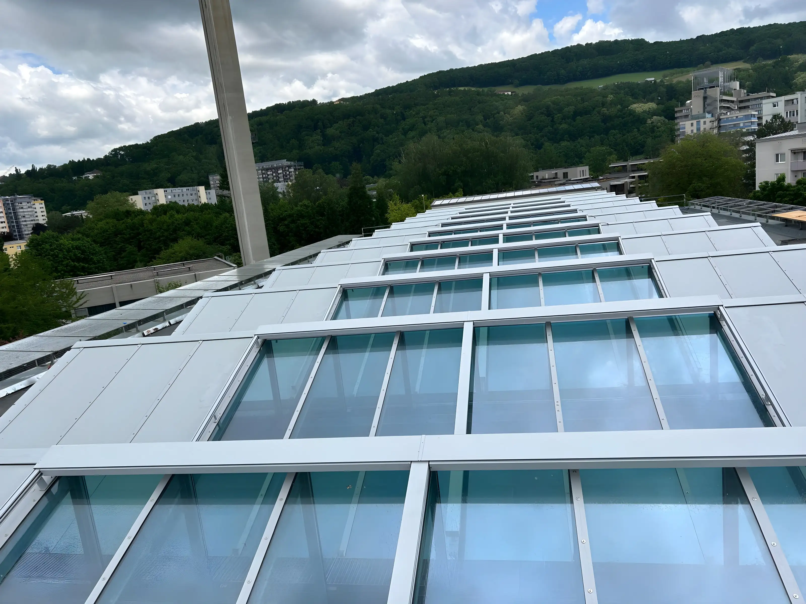
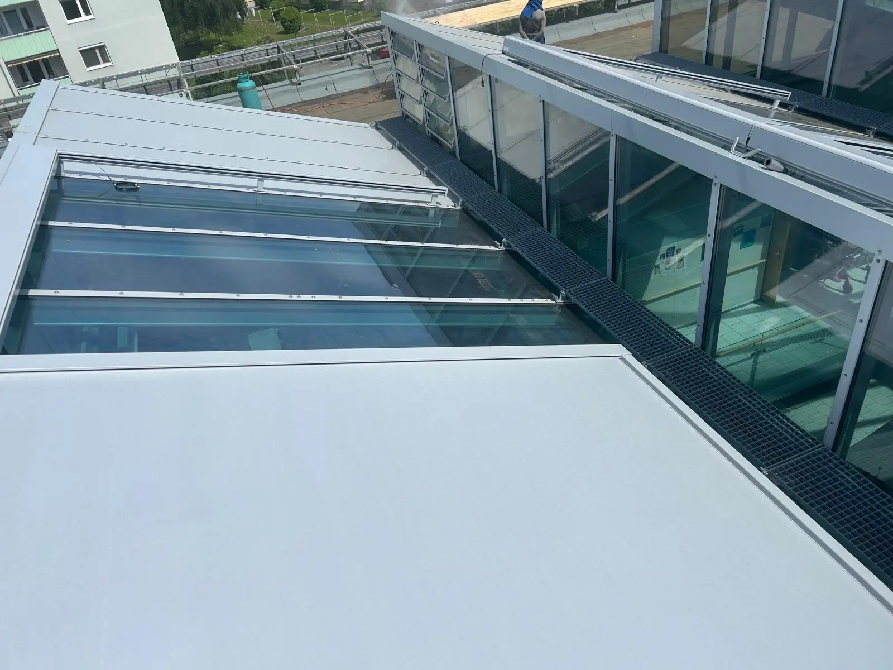

Belső árnyékolók

Belső zsalúzia
A belső zsalúziák kiválóan szabályozzák a beáramló fényt, modern és letisztult megjelenést biztosítanak bármely helyiségben. Könnyen kezelhetők, tartósak, és számos színben, lamellaméretben elérhetők.
- Precíz fényirányítás, tükröződésmentes munkakörnyezet
- Modern, letisztult design
- Könnyű kezelhetőség, egyszerű tisztítás

Pliszé
A pliszé árnyékolók modern, elegáns megoldást kínálnak minden ablakra. Különleges harmonikaszerű anyaguknak köszönhetően rugalmasan mozgathatók, akár alulról-felfelé, akár felülről-lefelé. Ideálisak ferde, íves vagy tetőtéri ablakokra is.
- Egyedi méretre gyártható, szinte bármilyen ablakformához
- Kiváló fény- és hőszabályozás
- Könnyű kezelhetőség, modern megjelenés
Roló
A rolók egyszerű, de hatékony belső árnyékolók, amelyek kiválóan alkalmasak ablakok, ajtók árnyékolására. Változatos színekben, mintákkal, fényáteresztő vagy sötétítő kivitelben is elérhetők.
- Fényáteresztő és sötétítő változatban
- Egyszerű, gyors felszerelés
- Széles szín- és mintaválaszték
Szalagfüggöny
A szalagfüggönyök elegáns és praktikus megoldást kínálnak nagy üvegfelületek, irodák, tárgyalók árnyékolására. Könnyen kezelhetők, modern megjelenésűek, és egyedi méretre készülnek.
- Nagy üvegfelületekhez ideális
- Egyedi méret, széles színválaszték
- Könnyű kezelhetőség, modern megjelenés